Introduction
Most techniques for realizing narrowband phase-shifting systems rely on microwave transmission lines or active approaches—such as RC polyphase networks—in CMOS technology. In the HF and low-frequency bands, this poses a significant challenge for systems requiring a lossless network with controlled impedance, as transmission lines become prohibitively long. The bridged-T topology employed in Tektronix oscilloscopes during the 1970s satisfies the lumped-element requirement; however, it requires coupled inductors with a strictly controlled coupling coefficient. Herein, we present a lumped-element alternative that eliminates the need for coupled inductors.
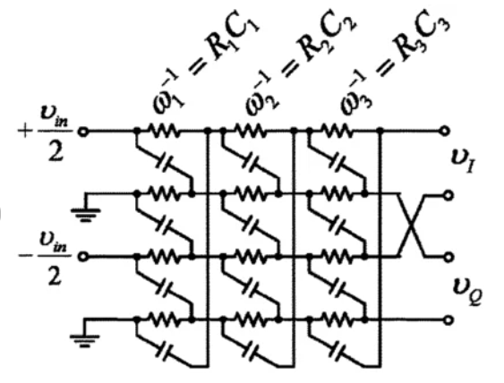
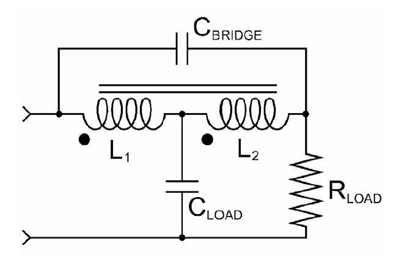
General properties of phase shift networks
Phase shift networks have two main properties, giving the following transfer function:
\[\begin{equation} H\left(s\right) = \frac{\sum_{k=0}^{N} A_k s^k}{ \sum_{k=0}^{M} B_k s^k} \end{equation}\]
They meet these requeriments: \[\begin{gather} |H\left(s\right)|_{s=j\omega} = 1 \text{ }\forall \omega\\ \phi = arg\left(H\left(s\right)\right) \end{gather}\]
Since passive losless network must be stable, all poles of denomitator must lie on letf-hand complex plane, the numerator is not submitted to this restriction so: \[\begin{gather} H\left(s\right) = \frac{\sum_{k=0}^{N} (-1)^kA_k s^k}{ \sum_{k=0}^{N} A_k s^k}\\ H\left(s\right) = \frac{A_0 - A_1 s + A_2 s^2 - A_2 s^3 +...+(-1)^n A_n s^n }{A_0 + A_1 s + A_2 s^2 + A_2 s^3 +...+A_n s^n} \end{gather}\]
And : \[\begin{equation} \phi = -2 arg\left(\sum_{k=0}^{N} A_k s^k\right) \end{equation}\]
Lattice Networks
Lattice networks are special case of symmetrical networks where shunt elements are diagonally crossed, this can provide a number of properties that meet the requirements of a phase-shift network. See for example the classic LC lattice network:
Where: \[\begin{gather} Z_{open} = \frac{1}{2}\left(Z_A+Z_B\right)\\ Z_{short} = 2\frac{Z_AZ_B}{\left(Z_A+Z_B\right)}\\ Z_o = \sqrt{Z_{open}Z_{short}} = \sqrt{Z_AZ_B} \end{gather}\]
In fact, the beahvior of lattice networkks can be described through Z parameters: \[\begin{gather} \begin{bmatrix} Z_{11} & Z_{12}\\ Z_{21} & Z_{22}\\ \end{bmatrix} \begin{bmatrix} I_1 \\ I_2 \end{bmatrix} = \begin{bmatrix} V_1 \\ V_2 \end{bmatrix} \\ \mathbf{Z} = \begin{bmatrix} \frac{1}{2}\left(Z_A+Z_B\right) & \frac{1}{2}\left(Z_B-Z_A\right)\\ \frac{1}{2}\left(Z_B-Z_A\right) & \frac{1}{2}\left(Z_A+Z_B\right)\\ \end{bmatrix} \end{gather}\]
A special case is when output port (port 2) is loaded with cuadripole’s characteristic impedance since \(I_2 = \frac{-V_2}{Z_o}\): \[\begin{gather} \begin{bmatrix} Z_{11} & Z_{12}\\ Z_{21} & Z_{22}\\ \end{bmatrix} \begin{bmatrix} I_1 \\ \frac{-V_2}{Z_o} \end{bmatrix} = \begin{bmatrix} V_1 \\ V_2 \end{bmatrix} \end{gather}\] Taking the second row, leads us to: \[\begin{gather} I_1 = \frac{V_2}{Z_{21}}\left(1+\frac{Z_{22}}{Z_o}\right)\\ \left(\frac{Z_{11}Z_o+Z_{11}Z_{22}-Z_{12}Z_{21}}{Z_{21}Z_o}\right) V_2 = V_1 \end{gather}\]
But \(Z_{11}Z_{22}-Z_{12}Z_{21} = \Delta\mathbf{Z} = Z_o^2\) Since is symmetrical network.
\[\begin{gather} \frac{V_2}{V_1} = \frac{Z_{21}}{Z_{11}+Z_o}\\ \frac{V_2}{V_1} = \frac{\frac{1}{2}\left(Z_B-Z_A\right)}{\frac{1}{2}\left(Z_A+Z_B\right)+Z_o}\\ \frac{V_2}{V_1} = \frac{Z_B-Z_A}{Z_A+Z_B+2Z_o} = \frac{\left(\sqrt{Z_B}-\sqrt{Z_A}\right)\left(\sqrt{Z_A}+\sqrt{Z_B}\right)}{\left(\sqrt{Z_A}+\sqrt{Z_B}\right)^2}\\ \frac{V_2}{V_1} = \frac{\left(\sqrt{Z_B}-\sqrt{Z_A}\right)}{\left(\sqrt{Z_A}+\sqrt{Z_B}\right)}\\ \frac{V_2}{V_1} = \frac{\left(\sqrt{Z_B}-\frac{Z_o}{\sqrt{Z_B}}\right)}{\left(\sqrt{Z_B}+\frac{Z_o}{\sqrt{Z_B}}\right)}\\ \boxed{\frac{V_2}{V_1} = \frac{Z_B-Z_o}{Z_B+Z_o} = \frac{Z_o-Z_A}{Z_o+Z_A}} \end{gather}\]
Since \(Z_o = \sqrt{Z_AZ_B}\) it would be desirable to have a dual pair impedances to have \(Z_o\) frequency independent. The simplest non dissipative case is the LC Lattice network:
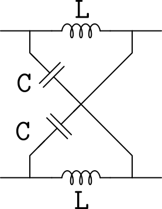
The characteristic impedance of this type of network is simply: \[\begin{equation} Z_0 = \sqrt{\frac{L}{C}} \end{equation}\]
This type of network is often used as narrowband balun:
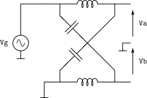
This balun works at : \[\begin{gather} L = \frac{Z_o}{\omega_0}\\ C = \frac{1}{Z_o\omega_0}\\ \end{gather}\] let us assume loading at output with \(Z_o\) or \(Z_o/2\) at both \(V_a\) and \(V_b\) from ground.
\[\begin{gather} V_a = V_g \frac{\frac{1}{j\omega C}||\frac{Z_o}{2}}{j\omega L + \frac{1}{j\omega C}||\frac{Z_o}{2}}\\ V_b = -V_g \frac{j\omega L ||\frac{Z_o}{2}}{\frac{1}{j\omega C} + j\omega L||\frac{Z_o}{2}} \end{gather}\]
so:
\[\begin{gather} V_a = V_g \frac{\frac{Z_o}{2}}{\frac{Z_o}{2} \left(1-\omega^2LC\right)+j\omega L} \\ V_b = V_g \frac{\omega^2 LC \frac{Z_o}{2}}{\left(1-\omega^2 LC\right)\frac{Z_o}{2} +j\omega L} \end{gather}\]
Since \(LC = 1/\omega_0^2\) Many
terms cancels at desired frequency \(\omega_0
= 2\pi f_0\): \[\begin{gather}
V_a = V_g \frac{\frac{Z_o}{2}}{j\omega_0 \frac{Z_o}{\omega_0}} =
-j\frac{V_g}{2}\\
V_b = V_g \frac{\frac{Z_o}{2}}{j\omega \frac{Z_o}{\omega_0}} =
-j\frac{V_g}{2}
\end{gather}\] Since \(V_a\)
arrow has opposite direction from \(V_b\) arrow, same sign take into account
shows \(180^{\circ}\) phase
shift.
Lattices are great, making phase shifters. however they are balanced
networks and they can’t be connected directly to ground on both sides,
because we are breaking horizontal axis symmetry shunting one of the
series impedances. May be we can force the symmetry taking into account
this "balun" principle and cascading two sections.
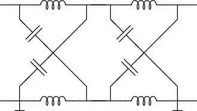
If we take look carefully, we can infer that is topologically equivalent to two T quadripoles in parallel:
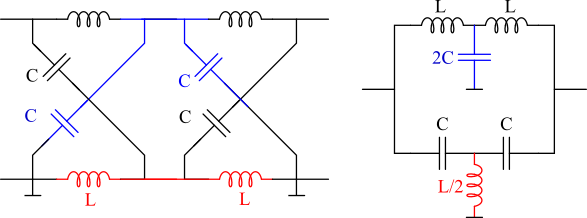
Analysis of double T
Let’s make the analisys of these double T in parallel. Instead of calculating two quadripoles in parallel (obtaining Y parameters, then summing matrices...), since we area dealing with symmetrical networks, we can exploit the symmetry to use even-odd analisys or using Bartlett.
The easy way: the Bartlett’s bisection theorem
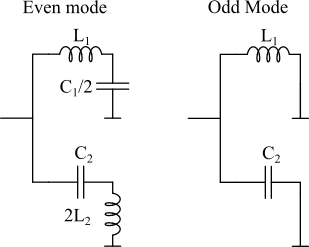
Even mode
For even mode we have \[\begin{gather} Z_{even} = \left(L_1s+\frac{1}{\frac{C_1}{2}s}\right) || \left(2L_2 s + \frac{1}{C_2 s}\right)\\ Z_{even} = \frac{ \frac{(s^2 L_1 C_1 + 2)(2s^2 L_2 C_2 + 1)}{s^2 C_1 C_2} }{ \frac{sC_2(s^2 L_1 C_1 + 2) + sC_1(2s^2 L_2 C_2 + 1)}{s^2 C_1 C_2} }\\ Z_{even} = \frac{ 2s^4 L_1 L_2 C_1 C_2 + s^2(L_1 C_1 + 4L_2 C_2) + 2 }{ s \left[ s^2 C_1 C_2(L_1 + 2L_2) + (C_1 + 2C_2) \right] } \end{gather}\]
Odd mode
\[\begin{gather} Z_{odd} = \frac{sL_1 \cdot \frac{1}{sC_2}}{sL_1 + \frac{1}{sC_2}} = \frac{ \frac{sL_1}{sC_2} }{ \frac{s^2 L_1 C_2 + 1}{sC_2} }\\ Z_{odd} = \frac{sL_1}{s^2 L_1 C_2 + 1} \end{gather}\]
Characteristic impedance
From \(Z_o^2 = Z_{even} \cdot Z_{odd}\): \[\begin{gather} Z_o^2 = \left( \frac{ 2s^4 L_1 L_2 C_1 C_2 + s^2(L_1 C_1 + 4L_2 C_2) + 2 }{ s \left[ s^2 C_1 C_2(L_1 + 2L_2) + (C_1 + 2C_2) \right] } \right) \cdot \left( \frac{sL_1}{s^2 L_1 C_2 + 1} \right)\\ Z_o^2 = \frac{ 2s^4 L_1^2 L_2 C_1 C_2 + s^2 L_1(L_1 C_1 + 4L_2 C_2) + 2L_1 }{ \left[ s^2 C_1 C_2(L_1 + 2L_2) + (C_1 + 2C_2) \right] \cdot \left( s^2 L_1 C_2 + 1 \right) } \end{gather}\]
For this circuit to behave as a constant-impedance network, the large equation above must collapse to a purely resistive value (independent of \(s\)). Mathematically, this means that the numerator and denominator polynomials must cancel each other out.The way to force this cancellation from a circuit topology perspective is by making the two branches of the even-mode equivalent circuit identical. That is, by equating \(Z_{e1}\) and \(Z_{e2}\):
\[\begin{equation} sL_1 + \frac{2}{sC_1} = 2sL_2 + \frac{1}{sC_2} \end{equation}\]
The condition for inductors is: \[\begin{equation} L_1 = 2L_2 \end{equation}\]
And for capacitors: \[\begin{equation} \frac{2}{C_1} = \frac{1}{C_2} \implies C_1 = 2C_2 \end{equation}\]
On the numerator this leads us to: \[\begin{gather} \text{Num} = 2s^4 L_1^2 \left(\frac{L_1}{2}\right) (2C_2) C_2 + s^2 L_1 \left( L_1(2C_2) + 4\left(\frac{L_1}{2}\right) C_2 \right) + 2L_1\\ \text{Num} = 2L_1 \left( s^4 L_1^2 C_2^2 + 2s^2 L_1 C_2 + 1 \right)\\ Num = 2L_1 \left( s^2 L_1 C_2 + 1 \right)^2 \end{gather}\]
On denominator: \[\begin{gather} \text{Den} = \left[ 4C_2 \left( s^2 L_1 C_2 + 1 \right) \right] \cdot \left[ s^2 L_1 C_2 + 1 \right]\\ \text{Den} = 4C_2 \left( s^2 L_1 C_2 + 1 \right)^2 \end{gather}\]
So finally we have the following expression: \[\begin{equation} Z_o^2 = \frac{ 2L_1 \left( s^2 L_1 C_2 + 1 \right)^2 }{ 4C_2 \left( s^2 L_1 C_2 + 1 \right)^2 } \end{equation}\] The two terms between parenthesis cancels out: \[Z_o^2 = \frac{L_1}{2C_2}\] so: \[Z_o = \sqrt{\frac{L_1}{2C_2}}\]
Recalling the expression for all-pass network: \[H(s) = \frac{V_{out}}{V_{in}} = \frac{Z_o - Z_{odd}}{Z_o + Z_{odd}}\]
\[H(s) = \frac{Z_o - \frac{sL_1}{s^2 L_1 C_2 + 1}}{Z_o + \frac{sL_1}{s^2 L_1 C_2 + 1}}\]
So:
\[H(j\omega) = \frac{Z_o(1 - \omega^2 L_1 C_2) - j(\omega L_1)}{Z_o(1 - \omega^2 L_1 C_2) + j(\omega L_1)}\]
\[H(j\omega) = \frac{A - jB}{A + jB}\]
\[\phi(\omega) = \angle(A - jB) - \angle(A + jB)\]
Then: \[\phi(\omega) = -\arctan\left(\frac{B}{A}\right) - \arctan\left(\frac{B}{A}\right) = -2\arctan\left(\frac{B}{A}\right)\]
The final expression is: \[\phi(\omega) = -2 \arctan\left( \frac{\omega L_1}{Z_o(1 - \omega^2 L_1 C_2)} \right)\]
Canonical Form
We could leave the above formula as is, but in filter design, it is conventionally expressed in terms of the resonant frequency \(\omega_o = \frac{1}{\sqrt{L_1 C_2}}\).If we substitute \(Z_o = \sqrt{\frac{L_1}{2C_2}}\) into the numerator term \(\frac{L_1}{Z_o}\), observe what happens:\[\frac{L_1}{Z_o} = L_1 \cdot \sqrt{\frac{2C_2}{L_1}} = \sqrt{2 L_1 C_2} = \frac{\sqrt{2}}{\omega_o}\]
Substituting this result along with \(\omega_o\) into the phase equation yields the canonical form of a second-order all-pass filter: \[\phi(\omega) = -2 \arctan\left( \frac{ \sqrt{2} \left(\frac{\omega}{\omega_o}\right) }{ 1 - \left(\frac{\omega}{\omega_o}\right)^2 } \right)\]
This is the final expression. It indicates that the phase begins at 0° at low frequencies, crosses −180° exactly at the resonant frequency \(\omega_o\), and asymptotically approaches −360° at high frequencies.
Circuit Simulation
1st Example
Let’s calculate a phase shifter circuit with a 50-ohm characteristic impedance that provides a 180° phase shift at 900 MHz. The resulting values for these design specifications are: \(C_1 = 2.5\text{ pF}\), \(C_2 = 1.25\text{ pF}\), \(L_1 = 12.5\text{ nH}\), and \(L_2 = 6.25\text{ nH}\).
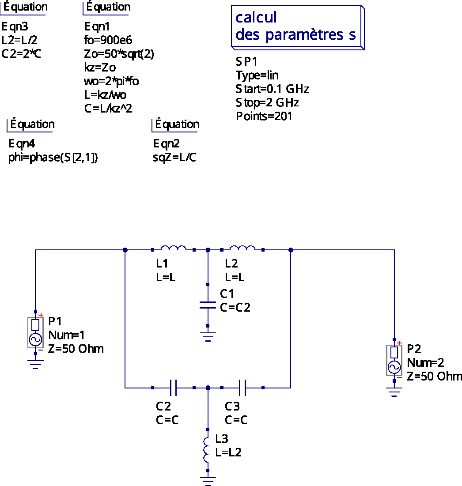
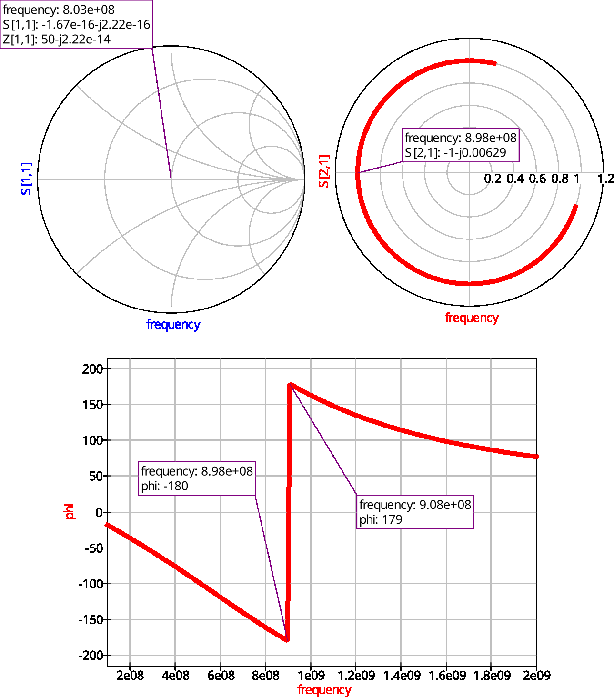
Example: Quadrature phase shift network
Let’s try a more interesting example: a 90-degree phase quadrature network.
\[-90^\circ = -2 \arctan\left( \frac{\omega L_1}{Z_o(1 - \omega^2 L_1 C_2)} \right)\] So: \[45^\circ = \arctan\left( \frac{\omega L_1}{Z_o(1 - \omega^2 L_1 C_2)} \right)\] Since tangent at 45 degrees is 1: \[\frac{\omega L_1}{Z_o(1 - \omega^2 L_1 C_2)} = 1\]
Substituting \(C_2\) by forcing the constant impedance condition: \[\omega L_1 = Z_o \left( 1 - \frac{\omega^2 L_1^2}{2Z_o^2} \right)\] \[2Z_o \omega L_1 = 2Z_o^2 - \omega^2 L_1^2\] \[L_1 = \frac{-2Z_o \omega \pm \sqrt{(2Z_o \omega)^2 - 4(\omega^2)(-2Z_o^2)}}{2\omega^2}\] So: \[L_1 = \frac{-2Z_o \omega \pm \sqrt{4Z_o^2 \omega^2 + 8Z_o^2 \omega^2}}{2\omega^2} = \frac{-2Z_o \omega \pm \sqrt{12Z_o^2 \omega^2}}{2\omega^2}\] \[L_1 = \frac{-2Z_o \omega \pm 2\sqrt{3} Z_o \omega}{2\omega^2}\] Dividing all by \(2\omega\), we have: \[L_1 = \frac{Z_o(\sqrt{3} - 1)}{\omega}\] And for \(C_2\): \[C_2 = \frac{\sqrt{3} - 1}{2 \omega Z_o}\]
\[L_1 = \frac{50 \cdot (\sqrt{3} - 1)}{5.655 \times 10^9} \approx \frac{50 \cdot 0.732}{5.655 \times 10^9} \approx 6.47 \text{ nH}\]
\[C_2 = \frac{\sqrt{3} - 1}{2 \cdot 5.655 \times 10^9 \cdot 50} \approx \frac{0.732}{565.5 \times 10^9} \approx 1.29 \text{ pF}\]
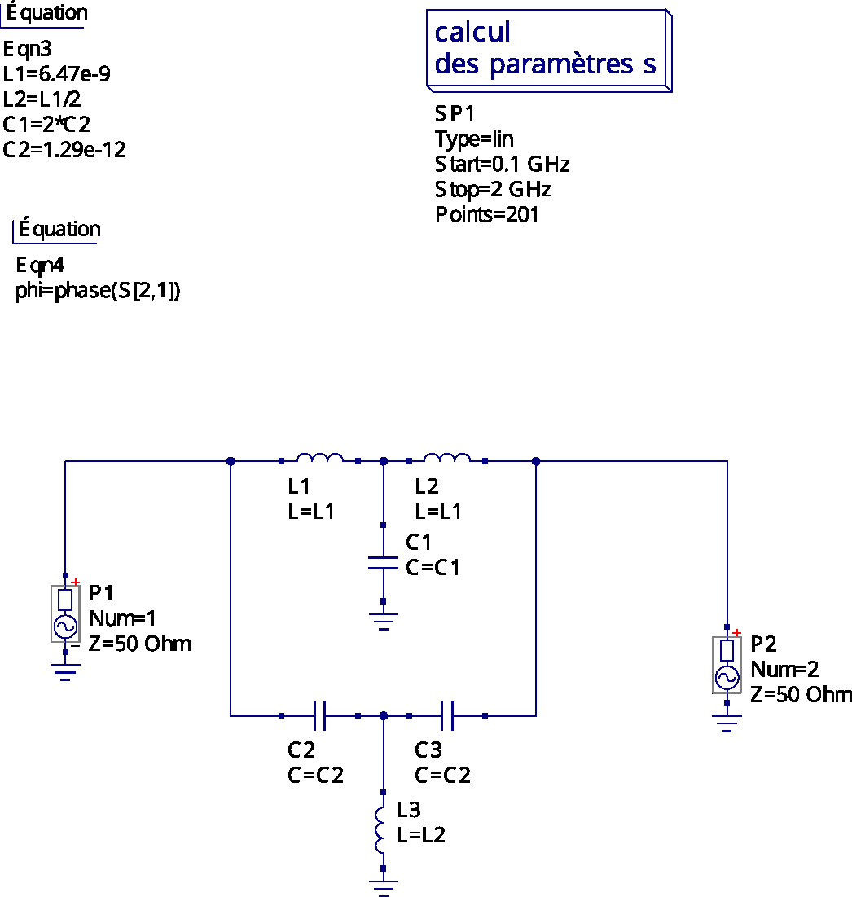
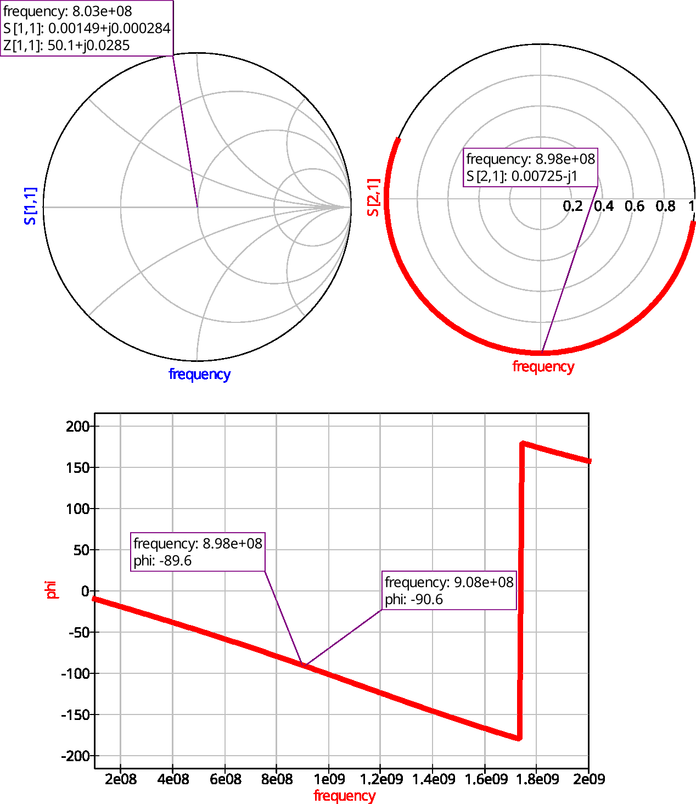
Conclusions
We have deduced the general conditions for a constant-impedance phase-shift network with uncoupled inductors, building upon lattice networks while extending their properties to the asymmetrical case. Applying Bartlett’s theorem and exploiting network symmetry, we derived the parameters required to achieve the desired response, which has been subsequently verified via simulation.
References
S. Kim and H. Shin, “A 0.6–2.7 GHz Semidynamic Frequency Divide-by-3 Utilizing Wideband RC Polyphase Filter in 0.18\(\mu\)m CMOS,” IEEE Microwave and Wireless Components Letters, vol. 18, no. 10, Oct. 2008. https://www.researchgate.net/figure/RC-polyphase-filter-for-quadrature-generation-a-Type-I-three-stage-b-Type-II-three_fig1_224333201 B. Razavi, “The Bridged T-Coil [A Circuit for All Seasons],” IEEE Solid-State Circuits Magazine, Nov. 2015. DOI: https://doi.org/10.1109/MSSC.2015.2474258